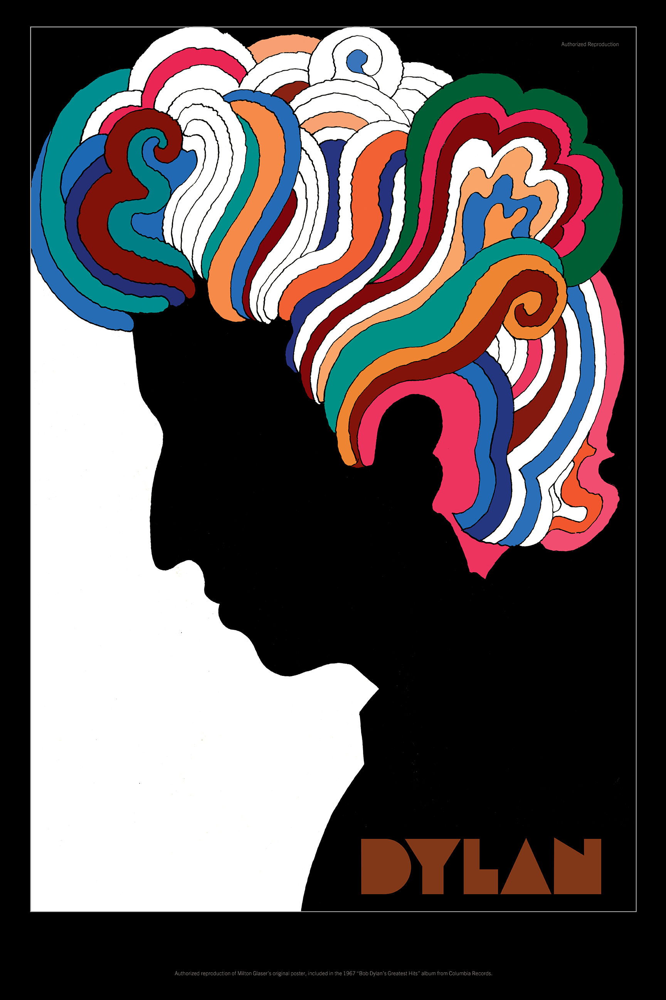
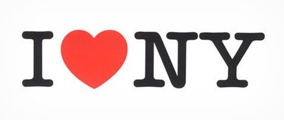
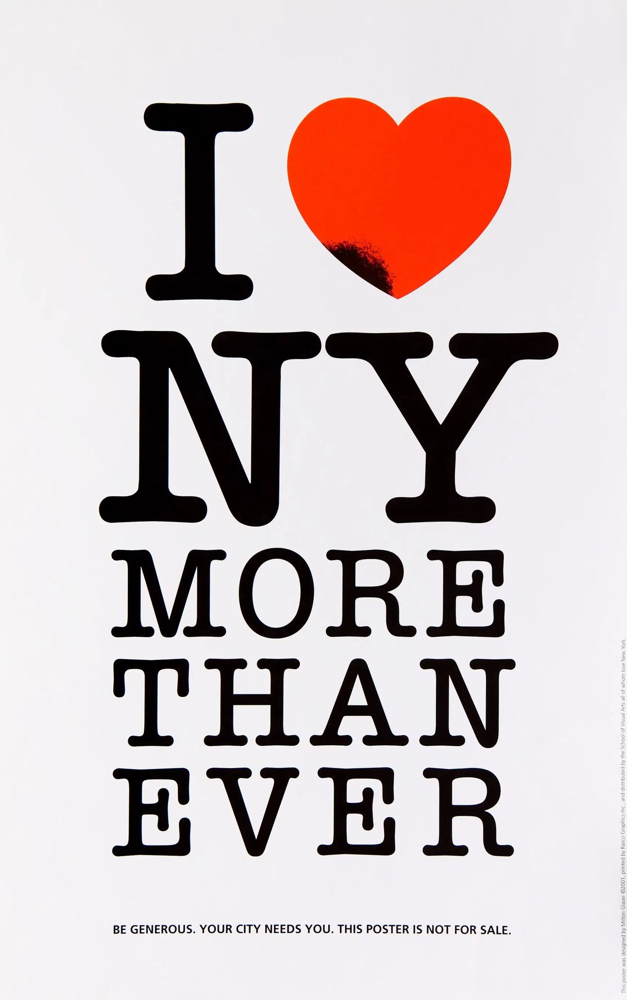
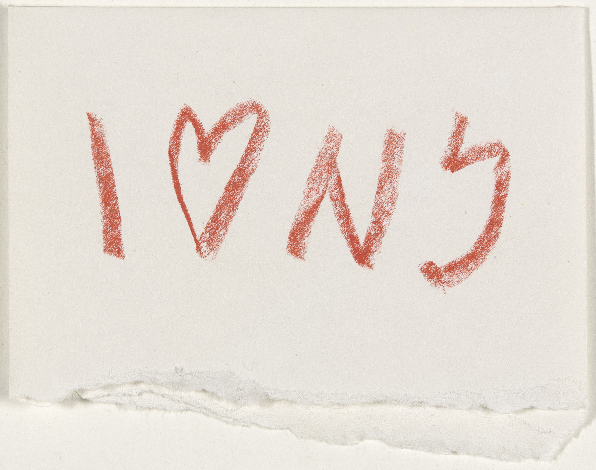
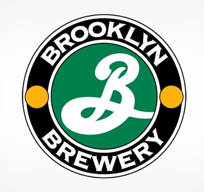
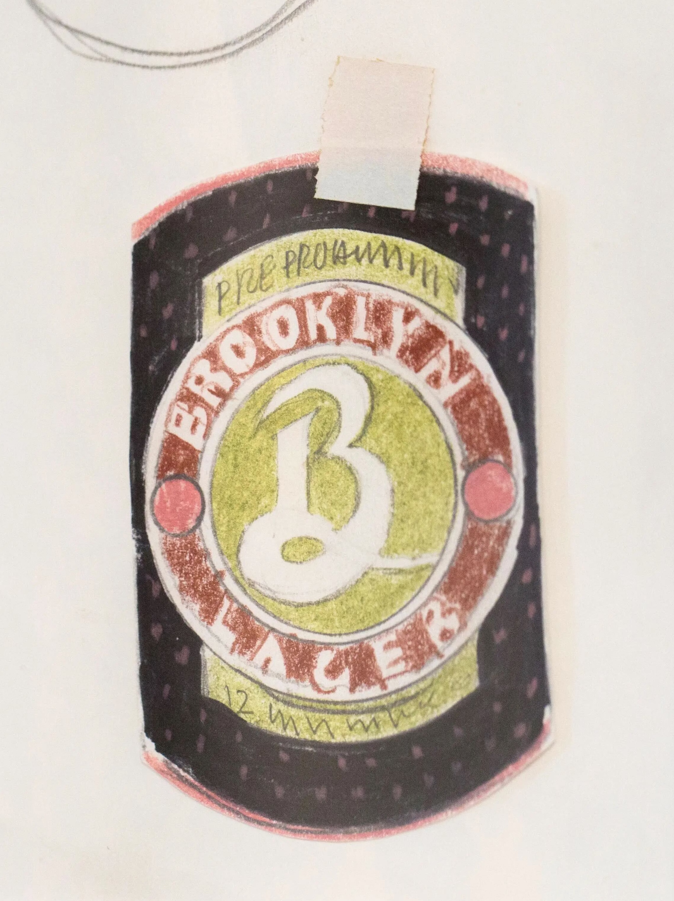
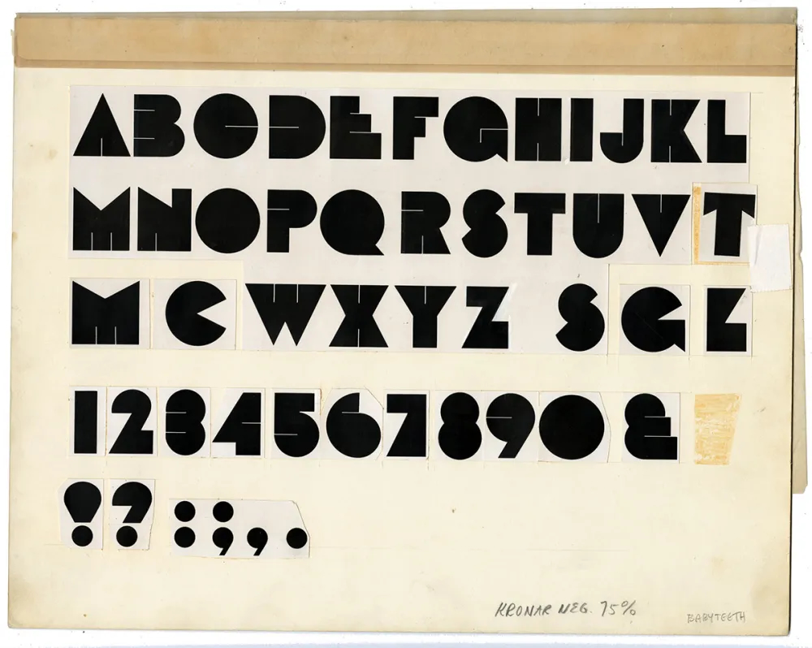
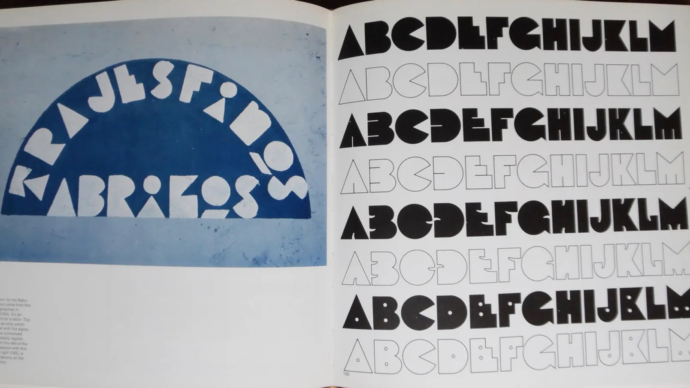
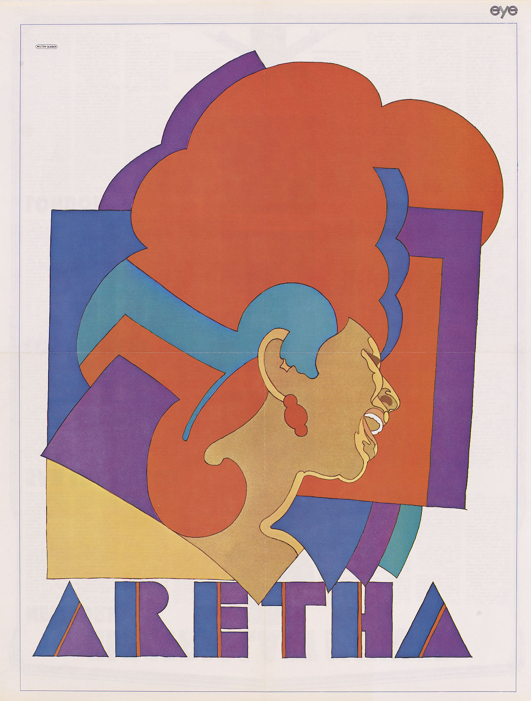

Works
Glaser designed a poster to be packaged
with the “Bob Dylan’s Greatest
Hits”
album to generate excitement about
Dylan’s music when there were false
rumors that he died due to a
horrible
motorcycle accident.

The iconic “I heart NY” logo
was commissioned by the New
York State Department
of
Commerce to boost tourism,
revive New York’s economy,
and restore pride. Glaser
famously sketched
this design
in crayon, and he donated the
logo pro bono. And in the
wake of 9/11, he designed the
“I
Heart NY More Than Ever”
poster to show New York City’s
adversity in times of terror.



Glaser believed in bringing brewing back to
Brooklyn, and this logo incorporates a nod
to the Brooklyn Dodgers, Brooklyn’s
industrial history, and beer foam. He also
created posters, packaging designs, motifs,
and more to bring the brand to life.


Glaser designed “Baby Teeth,”
a typeface inspired by signage
he saw in Mexico City.
He was
particularly fascinated at the
rendering of the letter “E” on
the signage because it was
so
unique yet completely legible.


This is a lithographic poster
made for the 1968 issue of Eye
Magazine. Glaser created this
at
the height of Aretha Franklin's
success in the 1960s, and it is now
housed in the National Portrait
Gallery in the Smithsonian
Institution. It was displayed as
a special tribute to her after
her passing in 2018.
